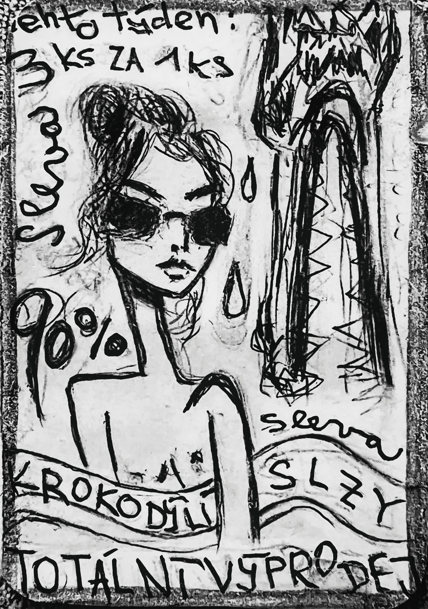

ilustrace · krokodýlFyzika jazyka · Karta Krokodýl
„Tento týden sleva 90 %. Tři za cenu jedné. Krokodýlí slzy. Totální výprodej.“
Krokodýl se probudil a zjistil, že je zboží. Na čele měl cenovku, na ocasu slevu a místo slz marketingové sdělení. Lidé se ptali, co to vlastně je, a prodavač odpověděl: „To je emoce. Ale levná. Už není čerstvá.“ Krokodýl plakal, že jeho slzy nejsou falešné – jsou jen komerčně dostupné. Jedna paní si ho koupila a postavila na poličku vedle keramického smutku. A když přišel Jazyk na kontrolu, řekl: „Tohle není věta. To je výkřik v obalu.“ A krokodýl pochopil, že možná to není lež – je to jen význam v akci. Sleva na smysl.
Pohádka · čtěte pomalu
Přejeďte myší přes podtržené místo pro popis figury. Kliknutím na figuru v tabulce se označí v textu.
12 úhlů pohledu
Odpovězte rychle, bez opravování. Hledáme váš přirozený úhel pohledu.